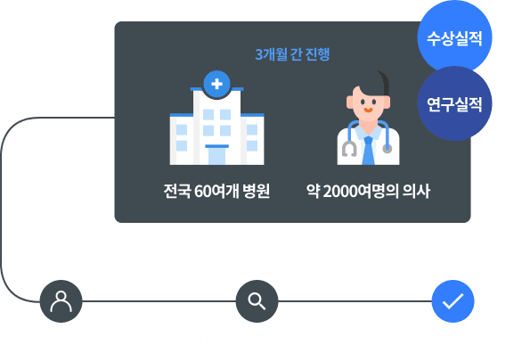
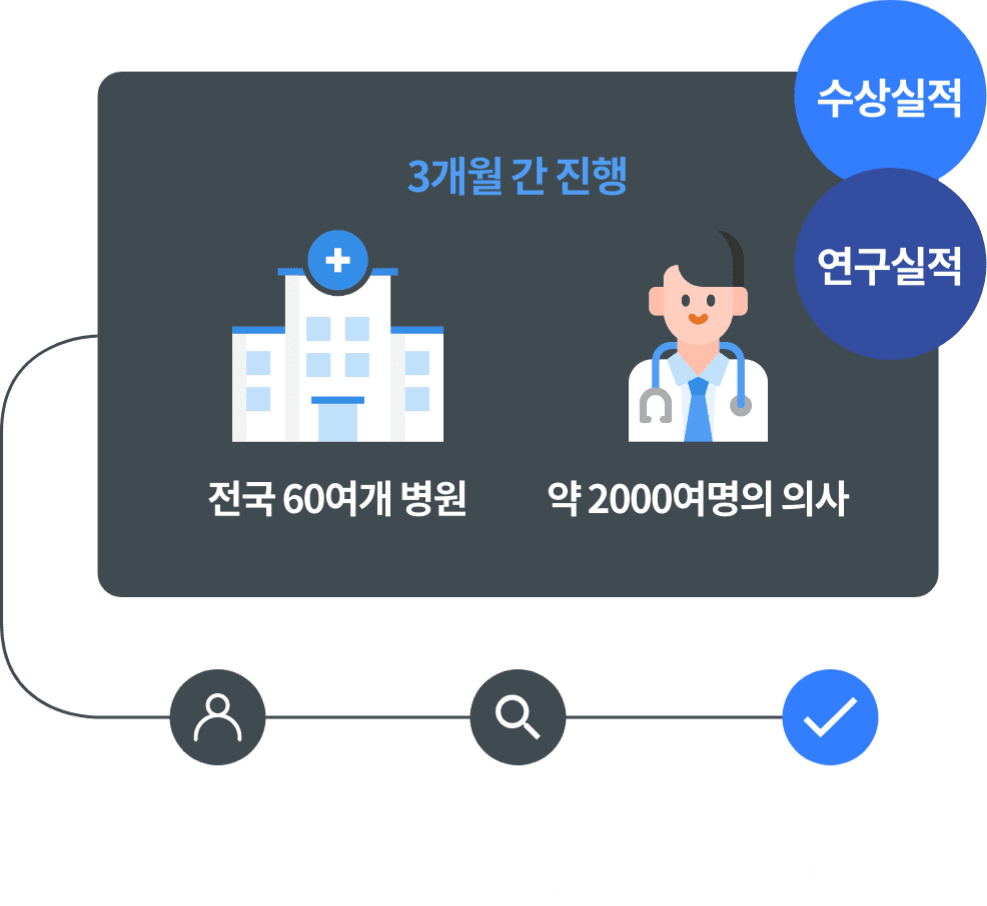

명의 선정기준
방송시간
1TV 금요일 밤 9시 50분 본
1TV 토요일 밤 9시 55분 재
1TV 목요일 오후 2시 10분 전재

조사분야
그동안 EBS 명의는 출연자들에 대한 신뢰와 공정성 확보를 위해
전문 조사기관의 설문을 바탕으로 의사들이 뽑은 의사를 선정해왔습니다
2007년 1차 조사를 시작으로 다양한 내용도 함께 조사하였습니다
전문 조사기관의 설문을 바탕으로 의사들이 뽑은 의사를 선정해왔습니다
2007년 1차 조사를 시작으로 다양한 내용도 함께 조사하였습니다
의료 서비스
관련 의식
관련 의식
질환별
이 시대의 명의
이 시대의 명의
우리나라
역대 최고의 명의
역대 최고의 명의
지방에서
활동하고있는 명의
활동하고있는 명의
분야별 최신 치료법 및
주요 이슈 사항
주요 이슈 사항
명의 선정 과정
특히 2020년 10월부터 실시된 9차 조사에는 임상 외에도
수상실적과 연구실적을 추가하였으며, 약 3개월에 걸쳐 이루어졌습니다
전국 60여개 병원에서 약 2000여명의 의사들이 설문에 참여하였고
명의 제작진은 설문조사 결과를 바탕으로 명의 출연 의사를
엄격한 기준으로 선정해왔습니다
수상실적과 연구실적을 추가하였으며, 약 3개월에 걸쳐 이루어졌습니다
전국 60여개 병원에서 약 2000여명의 의사들이 설문에 참여하였고
명의 제작진은 설문조사 결과를 바탕으로 명의 출연 의사를
엄격한 기준으로 선정해왔습니다

